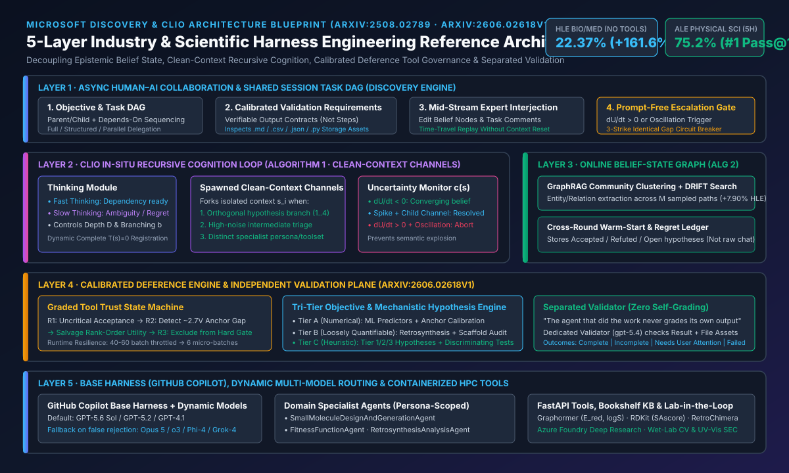
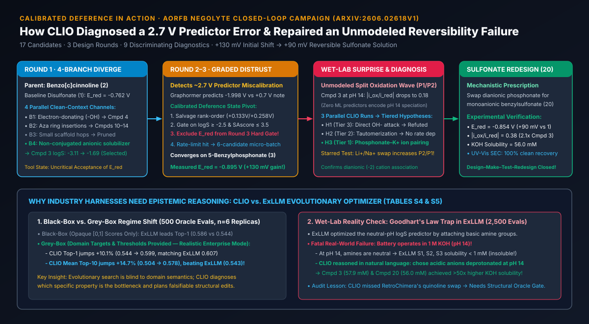
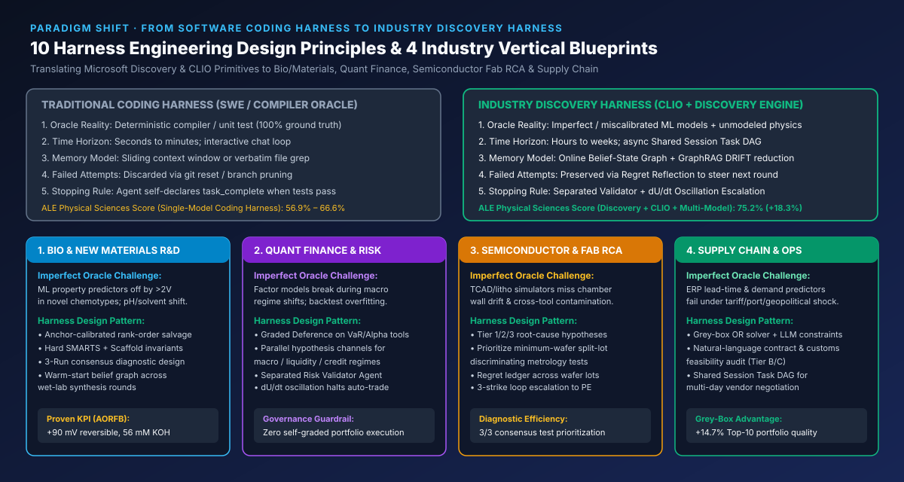
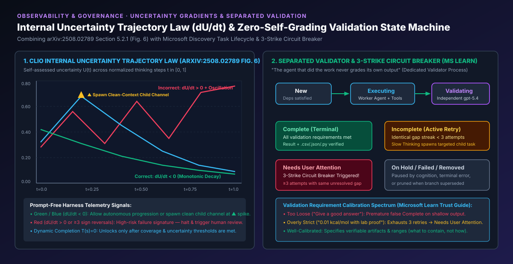

Interactive Calibrated Deference & Multi-Objective Gating Simulator
Reproduces Equations S1–S5 and the Round 1→Round 3 tool-trust state machine from arXiv:2606.02618v1. Adjust anchor drift, candidate properties, and scaffold invariants to inspect harness gating decisions.
Harness Decision Output & Equations S1–S5 Breakdown
Comparison: Static Blind-Trust Pipeline vs. CLIO Calibrated Deference Harness
| Evaluation Dimension | Static Blind-Trust Pipeline | CLIO Calibrated Deference + Structural Gate |
|---|
AORFB Wet-Lab Progression Benchmark (arXiv:2606.02618v1 Table 1 & S5)
| Molecule | E_red Pred / Measured | 1 M KOH Solubility | |i_ox/i_red| Reversibility | Key Physical Mechanism |
|---|---|---|---|---|
| Cmpd 1 (Baseline) | -1.60 V / -0.762 V | 500.0 mM | 0.52 (Single Wave) | Literature disulfonate reference control |
| Cmpd 3 (Phosphonate) | -2.04 V / -0.895 V (+133 mV) | 57.9 mM | 0.18 (P1/P2 Split Peak) | Tight -PO3^2- / K+ ion-pair wave splitting at pH 14 |
| Cmpd 20 (Sulfonate) | -1.92 V / -0.854 V (+92 mV) | 56.0 mM | 0.38 (Single Wave · 2.1x Recovery) | Weakly coordinating -SO3^- monoanion eliminates K+ splitting |
| ExLLM S1–S3 | High black-box score / Unmeasurable | < 1.0 mM (Precipitated) | Insoluble failure | Basic amines game neutral pH 7 predictor and deprotonate at pH 14 |
Internal Uncertainty Gradient Law (dU/dt) Live Diagnostics
Based on arXiv:2508.02789 Section 5.2.1 (Fig. 6): select an epistemic uncertainty trajectory to observe prompt-free harness intervention driven by slope dU/dt and sign-flip count (Ω).
Microsoft Discovery Separated Validator & 3-Strike Circuit Breaker
基于 Microsoft Learn 官方文档：“The agent that did the work never grades its own output.” Simulates normalized defect-fingerprint tracking across validation retries.
10 Core Design Principles for Domain & Industry Agent Harnesses
| # | Design Principle | Primary Source & Algorithmic Anchor | Enterprise Architecture Implementation Guide |
|---|---|---|---|
| 01 | Calibrated Deference State Machine (Calibrated Deference) |
arXiv:2606.02618v1 Sec 3.2 & Fig. S1 (~2.7 V E_red offset) |
Inject known reference anchors into every domain-predictor batch; when absolute scale drifts but local rank correlation holds, remove hard gating and salvage directional soft ranking. |
| 02 | Tri-Tier Heterogeneous Objectives (Tri-Tier Objectives) |
arXiv:2606.02618v1 Sec 2.1 & Table S5 (ExLLM pH 14 precipitation) |
Decouple scalar ML scores (Tier A), deterministic structural/process invariants (Tier B), and physical/compliance edge-regime reasoning (Tier C) to prevent Goodhart reward hacking. |
| 03 | Clean-Context Recursive Channels (Clean-Context Channels) |
arXiv:2508.02789 Alg 1 (+5.92% HLE) & Dynamic T(s)=0 |
Spawn clean-context child channels for orthogonal hypotheses, noisy debugging, or specialist personas, hiding the `Completion` tool until coverage gates pass. |
| 04 | Persistent Warm-Start Belief Graph (Warm-Start Belief Graph) |
arXiv:2508.02789 Alg 2 (+7.90%) & 2606.02618v1 Sec 4.1 |
Maintain Accepted / Refuted / Open hypothesis graphs across rounds, distilling via GraphRAG + DRIFT community summaries for clean warm-start handoffs. |
| 05 | Uncertainty Gradient Telemetry (dU/dt Telemetry) |
arXiv:2508.02789 Sec 5.2.1 & Fig. 6 |
Track epistemic uncertainty slope dU/dt and sign flips in real time; branch child channels on spikes (▲) and trigger prompt-free human escalation under high-frequency oscillation. |
| 06 | Separated Execution & Validation (Separated Validator) |
Microsoft Learn concept-tasks-investigations |
Enforce strict separation so the worker agent never grades its own output; an independent validator deployment inspects persisted `.csv/.json/.py` artifacts directly. |
| 07 | 3-Strike Identical-Defect Breaker (3-Strike Circuit Breaker) |
Microsoft Learn concept-trust-basic-investigation-patterns |
Hash normalized validation-gap fingerprints across retries; halt spinning loops after ≥3 identical unresolved defects and escalate to `Needs User Attention`. |
| 08 | Regret Reflection & Multi-Model Routing (Regret + Multi-Model) |
MS TechCommunity ALE Blog (Physical Sciences 75.2%, +18.3%) | Convert failed attempts into structured counterfactual constraints (Regret Reflection) on top of the GitHub Copilot base harness and route across diverse frontier models on stalls. |
| 09 | Runtime Micro-Batch Graceful Degradation (Micro-Batch Resilience) |
arXiv:2606.02618v1 Sec 3.2 (40–60 → 6 micro-batches) |
Expose API rate-limit and tool-health telemetry to the cognitive loop so it autonomously shrinks batch granularity or falls back to deterministic heuristics. |
| 10 | Consensus Diagnostics & Minimal Falsification (Consensus Diagnostics) |
arXiv:2606.02618v1 Table 2 & S2 (9 experiments → Cmpd 20) |
Launch parallel CLIO ensemble runs to rank Tier 1–3 failure hypotheses and execute unanimous (★) minimal falsification experiments before redesigning. |
1. Microsoft Discovery & CLIO 5-Layer Industry Harness Reference Architecture

2. Calibrated Deference & AORFB Molecular Design Closed-Loop Architecture

3. 10 Core Harness Principles & 4-Industry Mapping Matrix

4. Internal Uncertainty Gradient Law (dU/dt) & 3-Strike Validator State Machine
